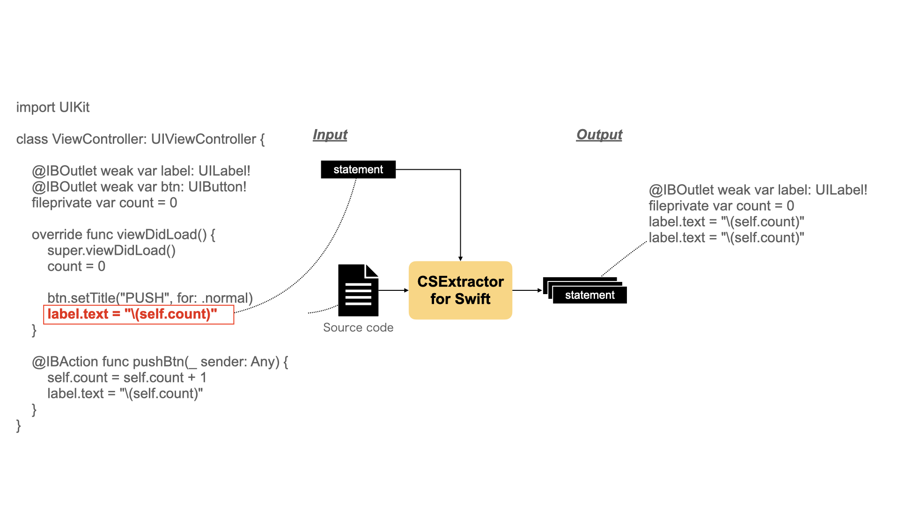
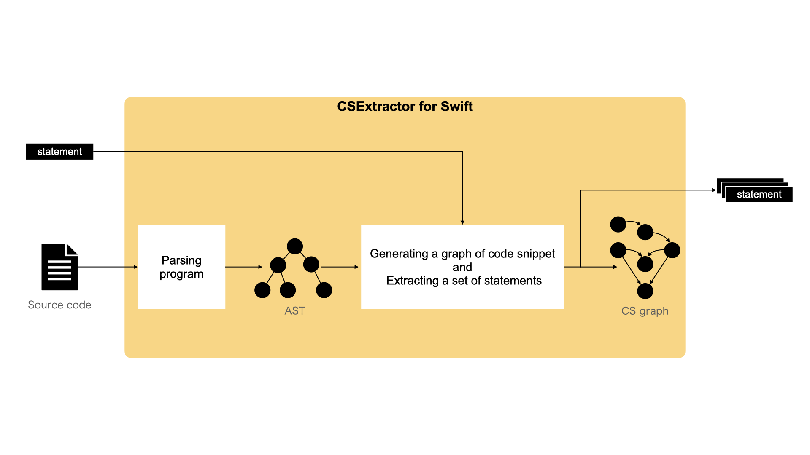
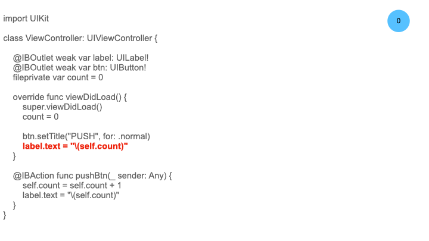
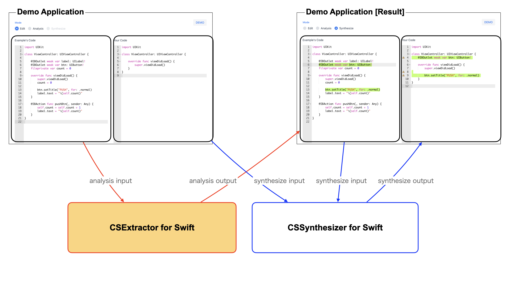
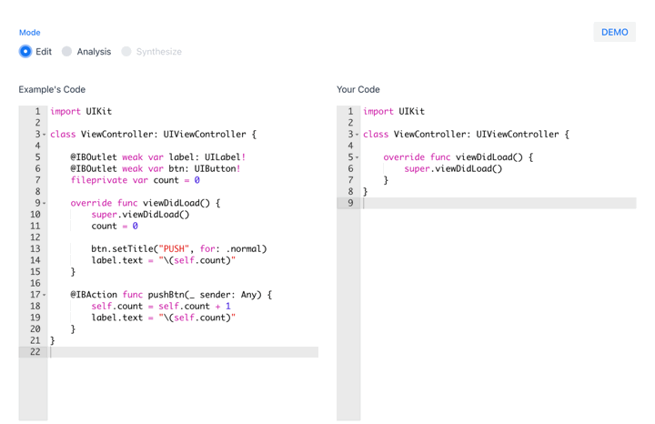

CSExtractor
1. Overview
"CSExtractor (CodeSnippet Extractor)" is a tool that extracts a set of statements from the source code, focusing on the dependencies of variables. The tool considers that the set of statements represents a functionality. We believe that the set of statements will help you understand the source code.
This page introduces the CSExtractor for source code written in the Swift language.
2. Approach
We think that it would be helpful to understand the code if we could grasp the following statements as a set.
- A statement in which the focus variable of the target statement is being processed
- A definition statement for the focus variable
- A definition and reference statements for other variables referenced in the above statements
Note that the focus variable is defined as follows:
- Assignment statement: the variable that appears on the left side (e.g., xxx.aaa = yyy -> xxx)
- Call function statement: variable to which the function is applied (e.g., xxx.func(...) -> xxx)
Example
The target statement "label.text = "\(self.count)"", is an operation on the variables of label. If you can grasp the other statements of the operation on label (e.g., "label.text = "(self.count)"" in pushBtn function) and the definition statement of label (e.g., "@IBOutlet weak var label: UILabel!" ), you may be able to understand the whole process on label. It may also be helpful to understand the definitions and references of other variables referred to in these statements (e.g., "fileprivate var count = 0").

3. Architecture
CSExtractor creates AST(Abstract Syntax Tree) by parsing statements and source code. It analyzes the dependencies of variables on the AST and generates a CS Graph. Then, it extracts a set of statements based on the CS Graph.
- Parsing the program
- Generating a graph of code snippet (CS graph) and extracting a set of statement

How to parse the program
The tool parses the source code and creates an AST. It analyzes the dependencies of the data on the AST and generates the CS Graph. The tool uses swift-syntax for parsing.
How to generate CS Graph and extract a set of statements
The flow of generating the CS Graph and extracting a set of statements is shown below.
- CSExtractor constructs a CS Graph based on the pointer, argument, and assignment relationships of variables that appear in the target statement.
- "label.text = "\(self.count)"" is added to the set of statements.
- The tool adds the definition statement of the label, which is a focus variable, into the CS Graph.
- "@IBOutlet weak var label: UILabel!" is added to the set of statements.
- The tool adds other statements of the focus variable to the CS graph.
- "label.text = "(self.count)"" in pushBtn function is added to the set of statements.
- The tool adds the definition statement of the count variable referenced in the target statement to the CS Graph.
- "fileprivate var count = 0" is added to the set of statements.

4. Demo Application
DemoApp of CSExtactor for Swift
Note: The demo app is running on heroku's free plan, so it is very slow.

Demo Application's Screenshot
